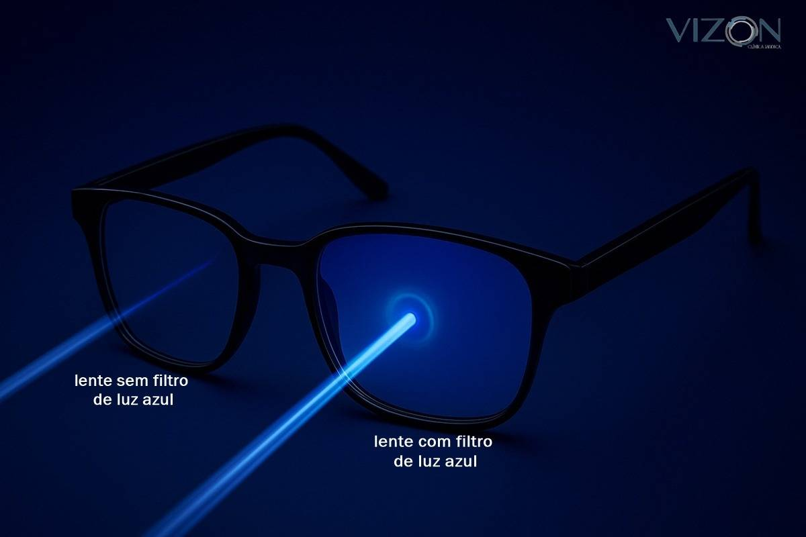

Disco de Newton

Óculos com filtros terapêuticos bloqueiam comprimentos de onda específicos da luz (como o azul ou o violeta), reduzindo o ofuscamento e aumentando o conforto visual de pessoas com fotofobia.
Construímos um Disco de Newton — um disco dividido em sete setores coloridos com as cores do espectro visível — e o giramos em alta velocidade. Conforme a rotação aumentava, as cores deixavam de ser vistas individualmente e se misturavam, até o disco parecer branco/acinzentado, demonstrando na prática que a luz branca é a soma de todas as cores.
Vídeo: Simulação do disco em rotação.
🔬 Explicação científica
O experimento se baseia nos estudos de Isaac Newton sobre a luz branca: ela não é ausência de cor, mas a soma de todas as cores luminosas, que se separam ao atravessar um prisma. O disco parece branco quando gira rápido por um fenômeno chamado persistência retiniana — o olho retém a imagem por uma fração de segundo, e o cérebro "soma" os reflexos das sete cores, interpretando o resultado como luz branca. Essa percepção acontece graças aos cones da retina, sensíveis à luz vermelha, verde e azul.
♿ Relação com a deficiência visual
A percepção de luz e cor varia muito entre pessoas com baixa visão: algumas precisam de muita luz para identificar formas, enquanto outras (com fotofobia severa) sentem dor ou têm a visão ofuscada em ambientes claros. A iluminação define o contraste e a profundidade dos objetos — sem cores contrastantes, itens se fundem com o fundo. Entender que a luz branca é soma de cores permite criar telas, óculos e softwares que manipulam comprimentos de onda específicos para melhorar o conforto visual.
💡 Nossa proposta: Filtro Inteligente de Leitura (F.I.L.)
Uma luminária de mesa com câmera inteligente e LEDs RGB ajustáveis que, em vez de emitir luz branca comum, isola as cores específicas mais confortáveis para cada usuário — bloqueando, por exemplo, a luz azul que causa ofuscamento. Uma IA embutida analisaria o reflexo do papel e ajustaria automaticamente o "balanço de cor" ideal, aprendendo as preferências do usuário ao longo do tempo.
✅ Conclusão
O Disco de Newton nos mostrou que a luz não é um feixe único, mas uma composição de cores que pode ser estudada e manipulada. Compreender como a luz reflete e como o olho a absorve é a base para criar telas de alto contraste, filtros terapêuticos e ambientes inteligentes que devolvem independência e dignidade a pessoas com deficiência visual.